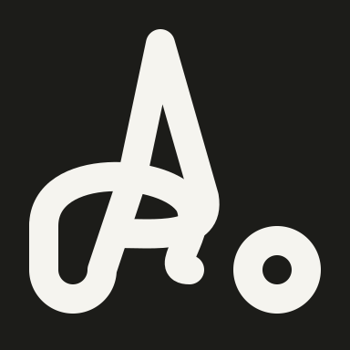
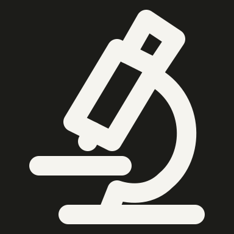
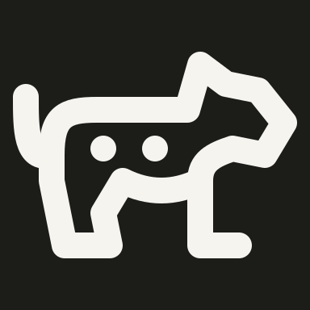
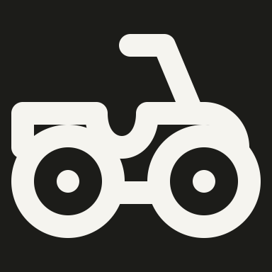

Source, rejected drawing and reviewed SOLO48 revision. All modules authored by gpt-6. Exceptions preserve the exact reviewed SVG and retain automatic findings.
solo/aerial-yoga-bow-pose
OriginalRejectedRevised · pass · exception

DarkNative 48 px
Rejected bent strokes no longer show the hanging fabric or recognizable reclined bow pose. Restore triangular suspension and a coherent folded body.
Preserve the suspended bow pose and tapered aerial fabric. The exact 4 px head-to-torso gap is analytic; the checker retains its curve warning. A 1 px envelope underfill and compact fabric/body spacing preserve the original pose.
solo/aerial-yoga-standing-stretch
OriginalRejectedRevised · passDarkNative 48 px
Rejected diagonal stick and pole omit the lifted arms and fabric. Restore a standing lunge with raised arms and two hanging fabric edges.
Rejected straight bar merges the rifle and arms and looks like pointing. Separate the shoulder stock, barrel and bent supporting arm; retain an aiming stance.
Reviewer specifically requested three outlined wells. Three 4 px-radius wells have visible 4 px holes; reduced clearance to the organic outer contour is necessary and visually clear.
solo/laboratory-microscope-101aaf57-solo
OriginalRejectedRevised · pass · exception

DarkNative 48 px
Rejected tube lacks an eyepiece and objective; the support is a disconnected large hook. Restore eyepiece, tube, objective, curved arm, stage and pedestal.
Preserve the complete sun, rays, horizon, laptop and seated worker composition. Compact local spacing and a broader keyshape envelope keep all four visual cues legible.
Rejected disconnected wheel struts and engine outline read as a cart. Restore a continuous mower deck, underbody and engine, keeping the reference handle direction.
The hammer-shaped head, dorsal fin, curved body and forked tail need local tapered openings. These preserve shark identity without adding fine strokes.
Keep the thumb/index relationship and curled fingers; any residual finger-junction advisory is accepted after 48 px review.
solo/leopard
OriginalRejectedRevised · pass · exception

DarkNative 48 px
Rejected silhouette resembles a generic bear and omits feline spots and tail. Add a slender feline body, longer muzzle, bent rear hock, curling tail and spots.
Preserve slender feline legs, tail and two contrasting flank spots. Local clearances around spots and rear hock are readable and necessary for leopard identity.
A long shallow cabin is essential for limousine proportions. Accept short-axis underfill and wheel/body junction advisories rather than stretching it into a tall generic car.
Preserve two double-ring cuffs suspended from a top link. The clear 2 px inter-ring bands and broad paired silhouette are intentional, with separate open wrist holes.
Rejected little hanging zigzag and U shapes do not show pulling a towel. Restore a broad dispenser, hanging sheet with torn edge, and two gripping hands.
Rejected disconnected wheel struts and engine outline read as a cart. Restore a continuous mower deck, underbody and engine, keeping the reference handle direction.
Rejected disconnected wheel struts and engine outline read as a cart. Restore a continuous mower deck, underbody and engine, keeping the reference handle direction.
Rejected tiny spaced rings read as an abstract triangular symbol. Enlarge the eggs and stack them into a compact mound with visible circular interiors.
Six large circular eggs form a compact pile. Their open 6 px interiors remain readable; close packing and slight keyshape underfill preserve caviar rather than a sparse dot diagram.
solo/quad-bike
OriginalRejectedRevised · pass · exception

DarkNative 48 px
Rejected chassis reads as a simple bicycle/cart. Restore ATV engine body, concave saddle, high steering handle and heavy wheels with hubs.